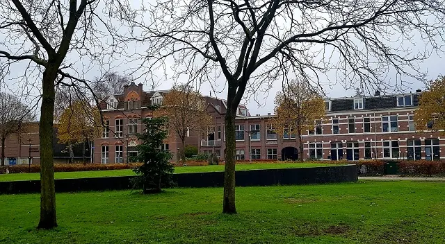
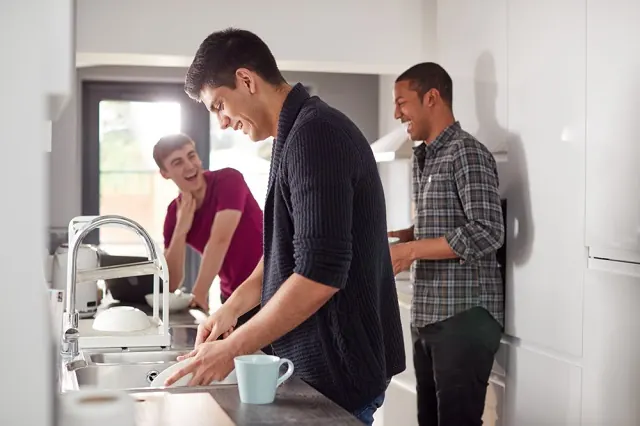
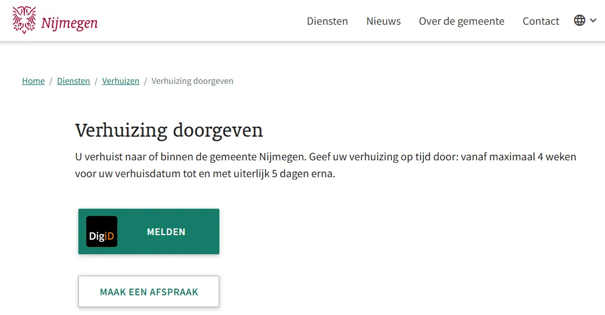

Het geheim van een studentenkamer vinden in Nijmegen
Gepubliceerd op 15 januari 2023, bijgewerkt op 21 oktober 2026
Onderdeel van de gids Studeren in Nijmegen

Je wilt op kamers gaan in Nijmegen, maar je weet niet waar je moet beginnen. De één zoekt al maanden, terwijl de ander het zo voorgeschoteld krijgt. Het is soms oneerlijk, maar met deze tips vergroot je je kansen op het vinden van een studentenkamer in Nijmegen.
Wat zijn je wensen en behoeftes?
Je bent al goed bezig, je hebt op het internet gezocht naar tips en bent hier terechtgekomen. Maar waar begin je? Om je zoektocht efficiënter te maken, is het van belang om duidelijk te krijgen wat je wensen zijn. Allereerst is het handig om te bedenken hoeveel huur je per maand zou willen betalen. Denk hierbij na over de kosten van gas/water/licht, deze zijn inbegrepen als de huurprijs incl., oftewel, inclusief is. En hoe groot mag die kamer zijn? Wat heb je nodig? Wil je een tweepersoonsbed en een leesstoel of neem je genoegen met een slaapbank? Al deze vragen hangen samen met de vraag waar je behoeftes en wensen liggen.
6 vragen om je zoektocht naar een studentenkamer te beginnen:
- Hoeveel wil je maximaal betalen voor een kamer?
- Hoeveel vierkante meter heb je nodig?
- In welke wijk zou je willen wonen?
- Hoe ver wil je reizen om naar je college te gaan?
- Wil je een huis delen of wil je liever alles voor jezelf?
- Wil je een kamer onderhuren voor een bepaalde periode of wil je gelijk voor onbepaalde tijd ergens wonen?
In welke wijk wil je wonen?
Bepaal eerst in welke wijken je wilt zoeken. Dan kun je gerichter reageren. Populair bij studenten zijn:
- Het centrum, midden in het uitgaansleven.
- Nijmegen-Oost, dichtbij de Radboud Universiteit en de HAN.
- Oud-West, met wijken als Bottendaal, op fietsafstand van het centrum.
- Lent, rustiger en met een dorps gevoel, aan de overkant van de Waal.

Hoe kom je aan een studentenkamer in Nijmegen?
Sociale media, kamersites, woningcorporaties en particulier huren. Wat kies je? Als je snel een kamer zoekt, is het slim om meerdere kanalen in te zetten. Hierdoor vergroot je je kansen.
Sociale media
Toen ik in mijn studentenhuis woonde, organiseerden wij kijkavonden wanneer wij een nieuwe huisgenoot zochten. Dit plaatste wij vaak op Facebookpagina’s zoals ‘Kamer Te Huur In Nijmegen’ of ‘Kamer in Nijmegen’, waar tussen de 20.000 en 50.000 leden in zitten. Hier zie je dagelijks berichten verschijnen waar studentenhuizen een nieuwe huisgenoot zoeken. Vaak stuur je een motivatiebrief waarin je jezelf voorstelt. De brief wordt gelezen door het studentenhuis en vervolgens wordt je wel of niet uitgenodigd voor een kijkavond, waarbij je de kans krijgt om kennis te maken met het huis.
7 Facebookpagina’s voor een studentenkamer in Nijmegen:
Kamersites
Om een studentenkamer te vinden in Nijmegen, kan je kamersites gebruiken. Je schrijft je in, waar soms kosten aan verbonden zijn, en vervolgens krijg jij het actuele aanbod te zien van deze website. De meeste kamersites werken met een lootsysteem, waarbij je een of meerdere malen per dag of week kan reageren op een woning of kamer.
6 kamersites voor het vinden van een studentenkamer in Nijmegen:
Woningcorporaties en particulier huren
Een woningcorporaties bouwen en verhuren leefruimtes, en dus ook studentenkamers, voor een betaalbare prijs. In Nijmegen is vooral SSHN populair, zij beheren veel woningen in Nijmegen en Arnhem.
Als je particulier gaat huren, heb je vaak contact rechtstreeks contact met de verhuurder. Hierdoor is er geen woningcorporatie bij betrokken. Je kan bijvoorbeeld een makelaar contacteren of op internet zoeken naar advertenties. Een voordeel hiervan is dat het contact directer verloopt, maar de huurprijs is in de meeste gevallen iets hoger.

Je hebt een kamer gevonden, waar moet je nu aan denken?
Je hebt een idee waar je zou willen wonen, dan komen er nog meer dingen kijken. Geen zorgen, je bent er bijna.
Borg betalen
Houd er rekening mee dat je bij het huren van een kamer vaak vooraf een eenmalige borg moet betalen. Dit bedrag krijg je terug als je de kamer weer verlaat (en heel hebt gelaten). De borg is in de meeste gevallen het bedrag wat je betaalt voor de kale huur. Dus exclusief gas, water en licht. Omdat je vaak de kamer overneemt van een andere student die destijds de borg ook heeft betaald, kan het zijn dat diegene je vraagt om het naar hen over te maken. Het kan ook zijn dat dit met de huurbaas wordt geregeld. Zoek dit van tevoren altijd goed uit, zodat je niet voor verrassingen komt te staan. Controleer daarom, als je een kamer intrekt, of alles werkt en in een goede staat verkeert.
Gas, water en licht
Bovenop de kale huur, moet je natuurlijk ook betalen voor hetgeen wat je gebruikt. Omdat de prijzen nog wel eens kunnen variëren, betaal je een standaard bedrag per maand. Dit bedrag is een schatting van de verwachtte kosten. Één keer per jaar wordt deze berekening gedaan. Het kan dus zijn dat je aan het einde van dat jaar iets terugkrijgt of extra moet betalen. Het is daarom handig om te onderzoeken of iedereen in het huis hetzelfde bedrag betaald of dat het aantal vierkante meter van je kamer bij deze berekening wordt meegenomen.
Verhoging kale huur
Omdat een studentenkamer gezien wordt als een sociale huurwoning, gelden er bepaalde regels omtrent het verhogen van de kale huur. Rijksoverheid schrijft dat vanaf 1 juli 2023, de verhuurder de huur mag verhogen met maximaal 3,1%, als de kale, maandelijkse huur €300,- of meer bedraagt. Klik hier voor meer informatie.
Inschrijven bij de gemeente
Heb je een kamer? Geef je verhuizing dan door aan de gemeente Nijmegen. Dat kan vanaf vier weken voor je verhuisdatum en moet uiterlijk vijf dagen erna. Doe je het te laat, dan riskeer je een boete. Meestal kan het online via nijmegen.nl.

Checklist bij je verhuizing
- Huurcontract tekenen
- Inschrijven bij de gemeente
- Verhuizing regelen, eventueel met een verhuisbedrijf
- Inboedel verzekeren
- Huurtoeslag en andere toeslagen aanvragen
- Adres wijzigen bij je bank, zorgverzekeraar en andere instanties
Genieten
Het allerbelangrijkste van je avontuur als student, is plezier hebben. Van het op de kop tikken van een 2e hands bank waar je na een avondje stappen per ongeluk in slaap valt, tot het behalen van je studie en het ontmoeten van nieuwe mensen. Een leerzame periode vol nieuwe ontdekkingen. Ik wens je veel succes en plezier op je avontuur!
Vraag je je af hoe je je huur moet gaan betalen? Of welke studentenvereniging het beste bij jou past? Kijk dan naar even hier, waar we deze onderwerpen verder ontdekken en jou op weg helpen zodat je niks mist in de oudste stad van Nederland; Nijmegen.